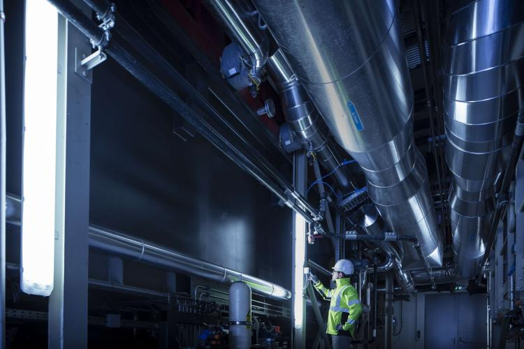

Réseaux de chaleur Collectivités, bailleurs et copropriétés
Réseau de chaleur, comment ça marche et comment s'y raccorder ?
Un réseau de chaleur produit de la chaleur dans une ou plusieurs installations centrales et la distribue par des canalisations enterrées jusqu'aux bâtiments raccordés. Voici comment il fonctionne, quand le raccordement est obligatoire et comment il se déroule, avec les données publiques de nos réseaux.
À retenir
- En 2025, la France compte 1 073 réseaux de chaleur sur 8 395 km, qui desservent 55 319 bâtiments et ont livré 29,4 TWh de chaleur.
- ENGIE Solutions exploite 181 réseaux de chaleur urbains. Leur taux d'énergies renouvelables et de récupération (EnR&R) atteint 56 % en 2025, avec un objectif de plus de 75 % pour tous nos réseaux en 2030.
- Un réseau classé (au moins 50 % d'EnR&R) impose le raccordement des bâtiments neufs et des rénovations importantes de plus de 30 kW situés dans son périmètre de développement prioritaire.
- Sur les 12 réseaux classés présentés plus bas, le prix moyen de la chaleur va de 81 à 143 € TTC par MWh en 2024. L'abonnement est soumis à une TVA de 5,5 %.
Source SDES, enquête annuelle publiée le 22 octobre 2026 ; rapport RSE 2025 ENGIE, activités Infrastructures énergétiques locales ; ecologie.gouv.fr ; France Chaleur Urbaine, open data du 17 novembre 2026 ; BOFiP.
Comment fonctionne un réseau de chaleur ?
Un réseau de chaleur, aussi appelé chauffage urbain, réunit trois éléments. Une ou plusieurs unités de production fabriquent la chaleur, à partir de biomasse, de géothermie, de chaleur récupérée sur l'incinération des déchets ou sur un site industriel, et en appoint de gaz. Un réseau primaire de canalisations isolées transporte ensuite l'eau chaude ou la vapeur sous la voirie. Enfin, dans chaque bâtiment, une sous-station équipée d'un échangeur transmet la chaleur au circuit de chauffage et d'eau chaude de l'immeuble, sans mélange des eaux.
Pour un immeuble raccordé, la chaufferie disparaît du bâtiment. Le gestionnaire exploite la production et le réseau, l'abonné règle un abonnement et sa consommation mesurée.
Que disent les données publiques de nos réseaux ?
Nous publions ici, réseau par réseau, les indicateurs que l'État rend publics pour nos 12 plus grands réseaux classés dont le prix est publié, hors Paris, rangés par chaleur livrée en 2024. Chaque nom ouvre la fiche officielle du réseau sur France Chaleur Urbaine.
| Réseau | ||||
|---|---|---|---|---|
| Saint-DenisSaint-Denis, Aubervilliers, La Courneuve et 4 autres communes | 65,1 % | 94 | 130 € | 639 |
| NantesNantes, Rezé, Bouguenais | 79,1 % | 42 | 108 € | 476 |
| Massy et Antony RéférenceMassy, Antony | 80,6 % | 68 | 116 € | 284 |
| Rennes Nord et EstRennes | 19,3 %* | 192 | 99 € | 375 |
| Besançon PlanoiseBesançon | 77,7 % | 56 | 81 € | 223 |
| DunkerqueDunkerque | 59,9 % | 109 | 118 € | 265 |
| Bagnolet et MontreuilBagnolet, Montreuil | 62,5 % | 95 | 123 € | 173 |
| Chalon-sur-SaôneChalon-sur-Saône | 70,4 % | 69 | 143 € | 306 |
| MâconMâcon, Charnay-lès-Mâcon, Sancé | 61,9 % | 79 | 130 € | 322 |
| GennevilliersGennevilliers | 62,3 % | 92 | 122 € | 131 |
| Carrières-sur-Seine et ChatouCarrières-sur-Seine, Chatou, Houilles et 2 autres communes | 94,6 % | 13 | 85 € | 129 |
| Orléans Centre et NordOrléans, Fleury-les-Aubrais, Saint-Jean-de-la-Ruelle | 81,8 % | 6 | 128 € | 147 |
| Ensemble des réseaux recensés en France1 061 réseaux, moyenne pondérée par la chaleur livrée | 66,6 % | 84 | 106 € | 52 413 |
Source France Chaleur Urbaine, « Tracés des réseaux de chaleur et de froid », data.gouv.fr, version du 17 novembre 2026. Taux d'EnR&R et contenu CO2 de l'arrêté dit DPE ; prix moyen et points de livraison issus de l'enquête annuelle des réseaux de chaleur (Fedene, Amorce, SDES), année 2024. Ligne France calculée par nos soins sur le même fichier.
* Taux de référence de l'arrêté DPE, tel que publié par France Chaleur Urbaine. Le statut de réseau classé provient de l'arrêté du 3 décembre 2024, établi sur ses propres données de référence.
Dix de ces douze réseaux dépassent 60 % d'énergies renouvelables et de récupération. Le contenu CO2 va de 6 g par kWh à Orléans à 192 g à Rennes Nord et Est, où la part d'EnR&R reste à augmenter. Ces écarts tiennent au mix de chaque réseau, nous les publions tels quels.
Votre bâtiment doit-il se raccorder au réseau ?
En pratique, vérifiez d'abord sur la carte de France Chaleur Urbaine si votre adresse se trouve dans un périmètre de développement prioritaire, puis interrogez le service urbanisme de votre commune avant tout dépôt de permis ou tout changement de chaudière collective.
Comment se passe un raccordement au réseau de chaleur ?
- 1
Vérifier l'éligibilité de l'adresse
Le gestionnaire confirme que le réseau passe à proximité et qu'il a la capacité de vous desservir.
- 2
Obtenir une étude et une proposition
Nous étudions les besoins du bâtiment (puissance, consommations, état de la chaufferie) et chiffrons le branchement, la sous-station et l'abonnement.
- 3
Décider
En copropriété, le raccordement se vote en assemblée générale. Chez un bailleur, il s'intègre au plan de travaux du patrimoine.
- 4
Signer la police d'abonnement
Le contrat fixe la puissance souscrite, les conditions de fourniture et les tarifs applicables au réseau.
- 5
Réaliser les travaux et mettre en service
Branchement sous la voirie, pose de la sous-station, adaptation du circuit de l'immeuble, puis mise en service avec le compteur d'énergie.
Combien coûte la chaleur et quelles aides existent ?
La facture d'un abonné comprend un abonnement, proportionnel à la puissance souscrite, et une part liée à la chaleur consommée. Sur le réseau de Nantes, par exemple, la part fixe représente 51 % du prix et la part variable 49 %. Le coût d'un raccordement dépend de la distance au réseau et du bâtiment, il se chiffre lors de l'étude.
TVA réduite
L'abonnement est taxé à 5,5 %, comme la chaleur livrée lorsque le réseau est alimenté au moins à 50 % par des énergies renouvelables ou de récupération.
Coup de pouce CEE
Le remplacement d'une chaudière au charbon, au fioul ou au gaz par un raccordement est aidé pour les immeubles collectifs (fiche BAR-TH-137) et le tertiaire (BAT-TH-127), pour les opérations engagées depuis le 1er janvier 2026.
Fonds chaleur
Pour les créations et extensions de réseaux portées par les collectivités, le dépôt de nouvelles demandes au Fonds chaleur de l'ADEME est suspendu depuis le 3 novembre 2026.
Source France Chaleur Urbaine, fiche du réseau de Nantes ; BOFiP, BOI-TVA-LIQ-30-20-20 ; ecologie.gouv.fr, Coup de pouce chauffage des bâtiments résidentiels collectifs et tertiaires, page mise à jour le 30 octobre 2026 ; Banque des Territoires, novembre 2026.
Comment une collectivité crée-t-elle ou étend-elle son réseau ?

Une collectivité choisit le mode de gestion de son réseau, en régie ou par une délégation de service public confiée à un exploitant. Le projet commence par une étude de faisabilité qui croise les besoins de chaleur et les ressources locales (biomasse, géothermie, chaleur fatale).
Nos équipes conçoivent, construisent et exploitent ces réseaux avec les collectivités, et exploitent 401 chaufferies biomasse. Les références de Massy et Antony ou du Grand Reims détaillent des projets menés de bout en bout.
Un projet de raccordement ou de réseau ?
Nos directions régionales réseaux étudient votre bâtiment ou votre territoire.
Questions fréquentes sur les réseaux de chaleur
Qu'est-ce qu'un réseau de chaleur classé ?
C'est un réseau alimenté à au moins 50 % par des énergies renouvelables ou de récupération, dont la chaleur est comptée à chaque point de livraison et dont l'équilibre financier est assuré. Le classement crée une obligation de raccordement dans un périmètre de développement prioritaire.
Mon immeuble est-il obligé de se raccorder au réseau de chaleur ?
Oui s'il se situe dans le périmètre de développement prioritaire d'un réseau classé, s'il est neuf ou fait l'objet de travaux de rénovation importants, et si sa puissance de chauffage, de climatisation ou d'eau chaude dépasse 30 kW. Des dérogations existent.
Combien coûte la chaleur d'un réseau ENGIE Solutions ?
Le prix dépend de chaque réseau. Sur les 12 réseaux classés présentés ici, le prix moyen publié pour 2024 va de 81 à 143 € TTC par MWh. Le coût d'un raccordement se chiffre lors de l'étude de votre bâtiment.
Quelles aides pour se raccorder à un réseau de chaleur ?
Le Coup de pouce « Chauffage des bâtiments résidentiels collectifs et tertiaires » aide à remplacer une chaudière au charbon, au fioul ou au gaz par un raccordement. L'abonnement bénéficie d'une TVA de 5,5 %.
Comment savoir si un réseau de chaleur passe près de mon bâtiment ?
La carte de France Chaleur Urbaine, service public, montre les tracés et les périmètres de développement prioritaire. Pour un réseau ENGIE Solutions, le portail Rezomee présente votre réseau local et nos équipes étudient votre demande.
D'où viennent ces chiffres ?
- Chiffres nationaux 2025 (1 073 réseaux, 8 395 km, 55 319 bâtiments, 29,4 TWh) : enquête annuelle sur les réseaux de chaleur et de froid du SDES, réalisée avec la Fedene et Amorce, publiée le 22 octobre 2026, citée par Banque des Territoires.
- Réseaux ENGIE Solutions (181 réseaux de chaleur urbains, 401 chaufferies biomasse, 56 % d'EnR&R en 2025, objectif 2030) : rapport RSE 2025 d'ENGIE, activités Infrastructures énergétiques locales, périmètre France, engie-solutions.com.
- Tableau des 12 réseaux : open data France Chaleur Urbaine du 17 novembre 2026. Sélection : réseaux dont le gestionnaire est ENGIE Solutions, classés, avec un prix moyen publié, hors réseau de Paris, rangés par chaleur livrée en 2024.
- Classement et raccordement obligatoire : ecologie.gouv.fr, Réseaux de chaleur, et code de l'énergie.
- Aides et fiscalité : ecologie.gouv.fr, Coup de pouce chauffage ; BOFiP, BOI-TVA-LIQ-30-20-20 ; Banque des Territoires, suspension du Fonds chaleur.
Ingénieure en génie énergétique, elle accompagne depuis quinze ans les collectivités et les bailleurs dans la création, l'extension et le verdissement de réseaux de chaleur.